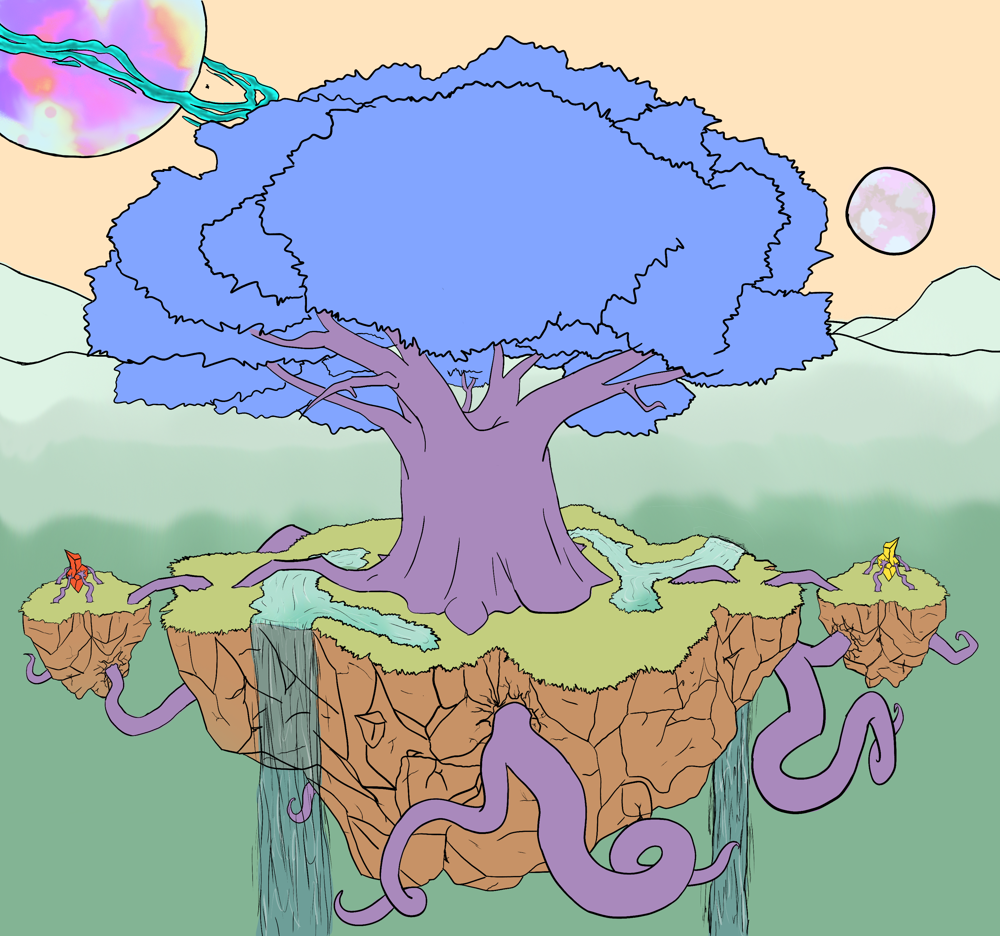
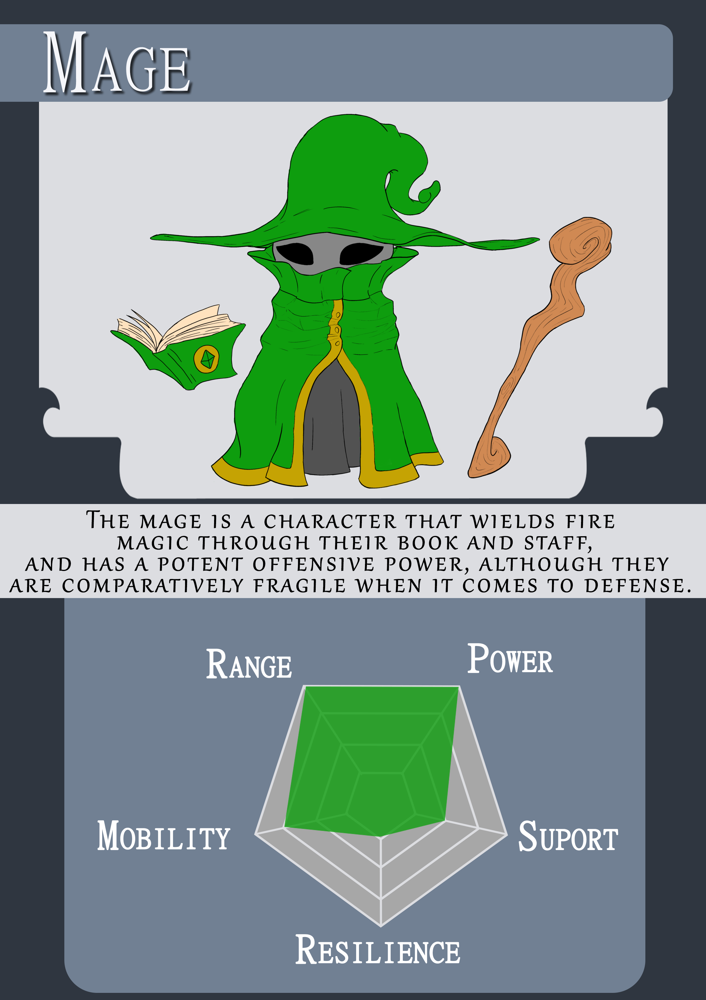
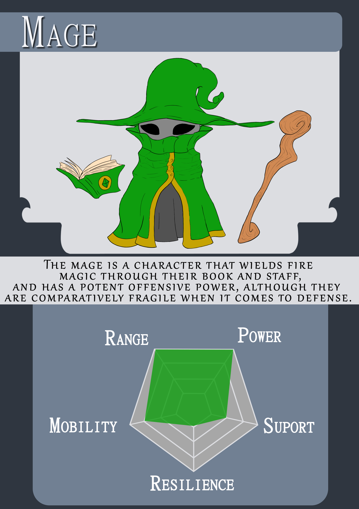

Meroth
Jogo Tático de Estratégia em Turnos 3D

Meroth é um jogo tático de estratégia em turnos com gráficos 3D e jogado por quatro jogadores em dispositivo local.
O jogo se passa em um mundo de fantasia criado pela árvore mágica chamada Meroth.
Esse projeto foi criado com o propósito de concluir o curso tecnologo de jogos digitais. No TCC, os alunos são
obrigados a criar um jogo sozinhos, incluindo a arte, design e programação.
História do Jogo

Era uma vez uma árvore anciã chamada Meroth, que tinha dentro de si um coração de cristal mágico muito poderoso. Um certo dia, ela decidiu criar um novo mundo, com uma natureza repleta de paisagens exuberantes, cheias de cores e criaturas pacíficas vivendo em harmonia. Porém, Meroth subestimou as consequências que viriam junto com sua ação. Sobrecarregado, o coração brilhou intensamente até explodir.

Seu cristal mágico houvera quebrado em vários pedaços, suas folhas foram queimadas até tornarem-se pó, uma grande parte do seu tronco estraçalhado e arremessado
em todas as direções, restando-lhe apenas a base e suas firmes raízes.
Com a magia que lhe restara, Meroth esticou seus extremos até alcançar os estilhaços do cristal mágico caídos ao seu redor. Com isso, ganhou acesso
a uma fonte de magia enfraquecida, mas suficiente para restaurar parte dos seus poderes.

Agora, as pedras precisam se fortalecer o bastante para fundir-se com a árvore anciã, e, assim, voltar a ser inteira novamente. Para isso, cada uma usará sua magia invocando criaturas poderosas rumo ao campo de batalha, com o objetivo de coletar fragmentos de seus oponentes e adquirir cada vez mais energia.
Personagens
Os quatro personagens de Meroth foram criados com base em esteriótipos de classes típicas medievais, frequentemente encontrados em jogos de RPG. Cada um deles possui características e habilidades únicas.
 
